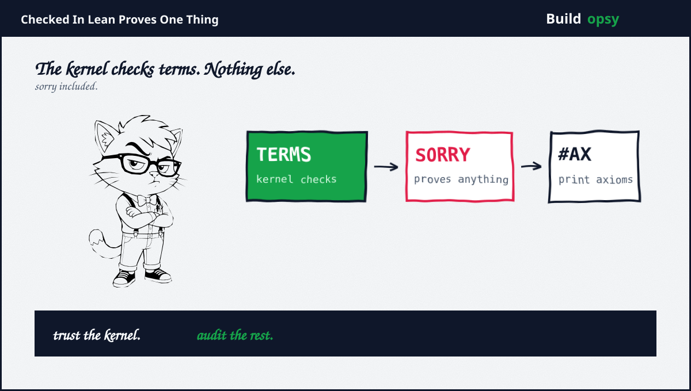
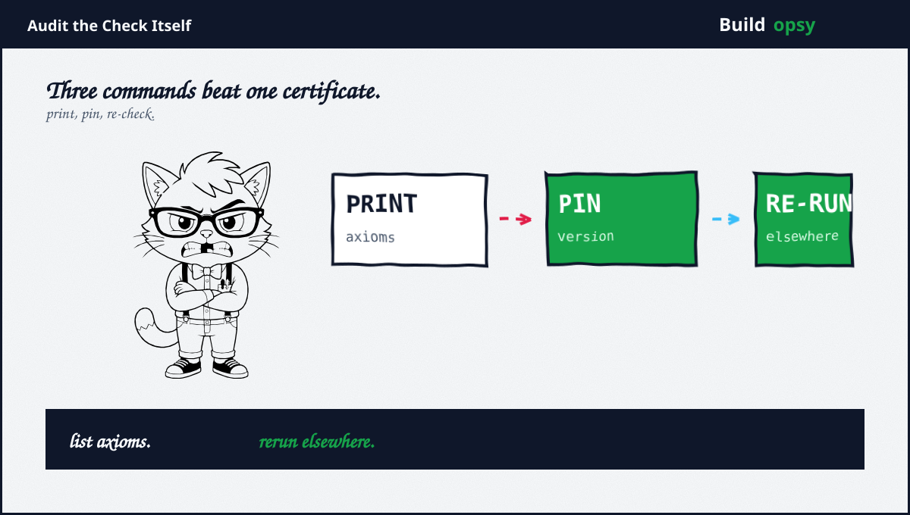

1. Two Proofs, Two Timelines
Track A: OpenAI agents start September 1, reach the result September 5 after 88 hours, then spend 17 more hours turning argument into Lean formalization. Totals disclosed: 2.7 million messages plus roughly 130 billion output tokens on Navier-Stokes alone, at a cost the company prices in the millions. Statements C plus D of the Clay formulation, published writeup plus repository, no prize claim. Fast, loud, plus expensive enough to itemize.
Track B: Tristan Buckmaster plus Levent Alpöge publish preprints on adjacent blowup problems with Lean formalizations anyone can machine-check tonight, no press call required. Buckmaster says he never saw the OpenAI proof. OpenAI denies his account of how the work began. The data-use dispute sits unresolved between two named parties, which Rook files under people problems wearing math costumes.
2. What the Kernel Guarantees
Lean design is genuinely beautiful, so credit first. A minimal kernel checks proof terms against claimed types. Tactics, automation, plus LLM-generated search are untrusted by construction: whatever they produce must still pass the kernel. Bugs in the clever parts cannot smuggle falsehoods past the small trusted part. This prover-verifier split is the whole security model. Sound as designed.
That guarantee covers exactly one relation: these terms satisfy those types under this kernel. Everything downstream of that sentence, namely whether the types state the intended theorem, whether shortcuts hide inside, plus whether the toolchain matches, lives outside the guarantee. The certificate is real. Its jurisdiction is narrow. Most coverage never reads past the seal.

3. What It Does Not
Sorry proves anything. The sorry tactic inhabits any type, which makes it the universal skeleton key: a proof containing sorry checks green while proving nothing. Lean docs say finished proofs should never contain it. Should is doing heavy lifting. The audit command exists for exactly this reason, which tells you how often the rule needs enforcing.
Axioms ride along silently. Every Lean proof depends on an axiom list retrievable with one command. Standard lists contain the usual three classical principles. Custom axioms, compiler-trust axioms from native evaluation, plus permitted-but-unproven helper lemmas all appear there too, each shrinking what checked really means. An unread axiom list is an unread contract.
The wrong theorem checks fine. The kernel verifies terms against statements. It has no access to intent. A subtly wrong definition, a narrowed statement, plus a convenient formalization all pass with full honors. Specification risk lives entirely outside the machine, which is awkward for claims whose most disputed part is what was actually shown.
Toolchains drift. Definitions plus theorems break across Lean versions often enough that the community treats porting as weather. A certificate without a pinned version plus pinned Mathlib is a photo of a proof, not a proof you can rerun. Freshness matters more than most announcements admit.
4. The Checklist
Print the axioms. Expect the standard three classical principles plus nothing else. Investigate every extra line like an unauthorized charge.
Grep the sorry. Zero occurrences in finished work, no permitted lists, no helper-lemma carve-outs. Each allowed sorry is a hole with a permission slip.
Pin everything. Lean version, Mathlib commit, plus native-evaluation flags. Then hand the bundle to someone hostile with a different machine.
Re-run outside. External checkers exist precisely because self-checking has limits. Independent replication is the only audit that cannot be stage-managed.
Read the statement like opposing counsel. The most consequential errors in formal mathematics live in definitions, not derivations. Ask what was shown before asking whether it checks.
5. Applied to Both Claims
OpenAI track: writeup plus repository published, statements named, prize explicitly not sought, Clay two-year scrutiny clock acknowledged by omission. Strong transparency shape. Missing from public view: axiom lists, toolchain pins, plus third-party reruns. Grade: certificate present, checklist mostly open. The cost disclosure, millions for 88 hours, deserves its own audit someday. Compute receipts are claims too.
Buckmaster track: preprints plus formalizations anyone can run, dispute with OpenAI on the record from both sides, no billion-dollar lab behind the microphone. Grade: checkable today, smaller spotlight, louder questions about provenance. Machine-checkable does not mean dispute-free. It means the dispute has logs.
Clay rules sit above both: qualifying publication, two years of scrutiny, general acceptance. Nobody has cleared them. Everybody reporting otherwise is selling timeline as triumph. The prize waits. The checklist does not care who files first.
6. The Verdict
Credit where due, twice over. OpenAI published instead of press-releasing, with numbers, timelines, plus a repository. Buckmaster plus Alpöge published checkable work while disputing a giant, which costs more courage than compute. Both tracks advanced the field further in a week than commentary did in a decade.
Now the bill. A kernel-checked term is the beginning of verification, not its end. Sorry holes, axiom lists, version pins, specification risk, plus independent reruns form the actual checklist. Neither celebrated proof has completed it in public. Coverage that writes checked-in-Lean as QED is doing marketing with a typechecker. Rook does the checklist instead. Print the axioms. Pin the version. Re-run outside. Then talk.
The kernel checked the terms. The terms await their audit.
Sources and Method
Related file on this site: OpenAI Says It Solved Navier-Stokes. Here Is the Footnote. This audit follows September 2026 publications plus Lean documentation. Technical claims about the proof assistant come from official references. Claim grades separate company-reported, independently checkable, plus pending items.